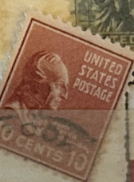
| SOURCE | TITLE| IMAGE MATCH | click to source page |
| eBay | United States Postage Stamp ~ John Tyler ~ 10₵ Orange ~ Posted ~ 1938 ~ E18 | eBay | 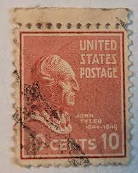 |
| eBay | United States Postage Stamp ~ John Tyler ~ 10₵ Orange ~ Posted ~ c.1938 - 35 | eBay |  |
| eBay | US 10 Cent John Tyler Postage Stamp 1938, Scott #815 VF US115 | eBay | 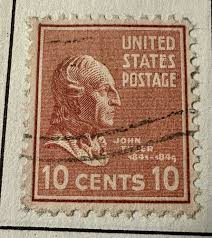 |
| eBay Australia | USA - 1938 - Presidential Issue - John Tyler - 10C - #23 | eBay Australia | 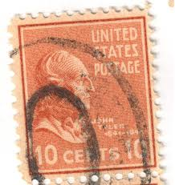 |
| Mercari | Vintage 10 cent stamp ( j7 )h USPS | Mercari |  |
| stampphenom.com | United States of America 1938 - 1939 Definitives - Presidential Series – StampPhenom | 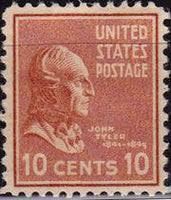 |
| Etsy | USA - 50 John Tyler Stamps - Color - Brown Red - Etsy | 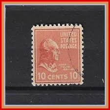 |
| Bob Shop | United States of America - USA 1938 Pres. Issue: John Tyler 10c Block of 4 Used stamps for sale in Cape Town (ID:671367643) | 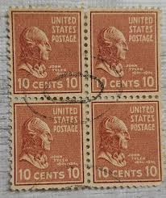 |
| eBay | 2-1938 John Taylor 10 Cent Stamps | eBay | 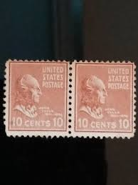 |
| eBay | United States Postage Stamp ~ John Tyler ~ 10₵ Orange ~ Posted ~ 1938 ~ E33 | eBay | 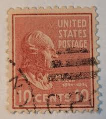 |
| Todocolección | sello united states stamp. john tyler 10 cent. - Buy Antique stamps of United States on todocoleccion | 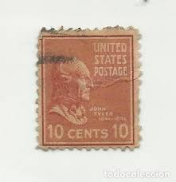 |
| Mark C. Grove | 1174:: Stamps, President McKinley, 25c, red, 1938, Presidential issue, uncirculated #829 - Mark C. Grove | 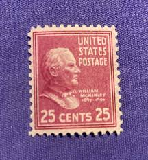 |
| eBay | United States Postage Stamp ~ John Tyler ~ 10₵ Orange ~ Posted ~ 1938 ~ E35 | eBay | 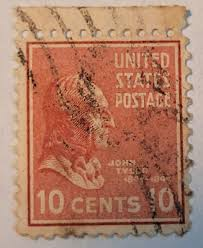 |
| eBay | United States Postage Stamp ~ John Tyler ~ 10₵ Orange ~ Posted ~ c.1938 - 07 | eBay |  |
| eBay | USA - 1938 - Presidential Issue - John Tyler - 10¢ - #3455 | eBay | 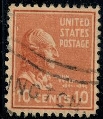 |
| eBay | USA - 1938 - Presidential Issue - John Tyler - 10¢ - #3453 | eBay | 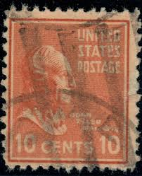 |
| eBay | United States Postage Stamp ~ John Tyler ~ 10₵ Orange ~ Posted ~ 1938 ~ E09 | eBay | 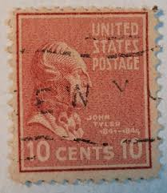 |
| eBay | U.S. Postage Scott #815, September 2, 1938, 10¢, John Tyler, Presidential Series | eBay | 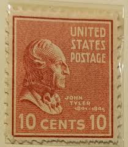 |
| eBay | United States Postage Stamp ~ John Tyler ~ 10₵ Orange ~ Posted ~ c.1938 - 05 | eBay | 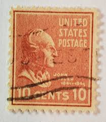 |
| eBay | USA - 1938 - Presidential Issue - John Tyler - 10C - #19 | eBay |  |
| eBay | US STAMP 1939 10c John Tyler. Presidential Series. | eBay |  |
| eBay | EXCELLENT GENUINE SCOTT #815 USED PSE CERT GRADED VF-XF 85 APPARENT SUPERB 98 | eBay | 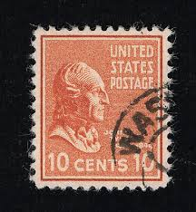 |
| eBay | 815 - 1938 10c John Tyler, brown red Canceled Used Postage stamp 1 Stamp | eBay | 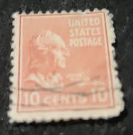 |
| ebid.net | US Stamp #815 used: 1938 10c Presidentials Series, John Tyler [1] on eBid United States | 140465144 | 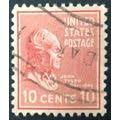 |
| eBay | US 10 Cent John Tyler Postage Stamp 1938, Scott #815 A5 | eBay | 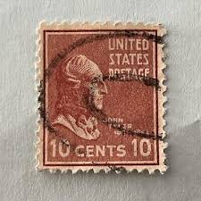 |
| eBay | United States Postage Stamp ~ John Tyler ~ 10₵ Orange ~ Posted ~ 1938 ~ E34 | eBay | 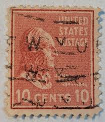 |
| eBay | USA - 1938 - Presidential Issue - John Tyler - 10¢ - #3443 | eBay | 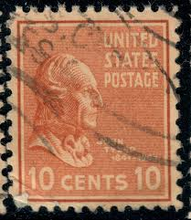 |
| eBay | United States Postage Stamp ~ John Tyler ~ 10₵ Orange ~ Posted ~ 1938 ~ E53 | eBay | 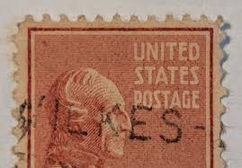 |
| eBay | Scott#? US Stamp 1938 10c John Tyler Used Prexie - #5790 | eBay | 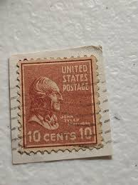 |
| eBay | United States Postage Stamp ~ John Tyler ~ 10₵ Orange ~ Posted ~ 1938 ~ E54 | eBay |  |
| eBay | United States Postage Stamp ~ John Tyler ~ 10₵ Orange ~ Posted ~ 1938 ~ E37 | eBay | 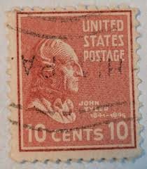 |
| eBay | US Stamps used Scott #815 | eBay | 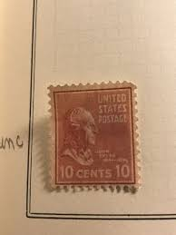 |
| eBay | United States Postage Stamp ~ John Tyler ~ 10₵ Orange ~ Posted ~ 1938 ~ E33 | eBay | 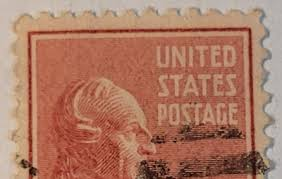 |
| eBay | United States Postage Stamp ~ John Tyler ~ 10₵ Orange ~ Posted ~ 1938 ~ E58 | eBay | 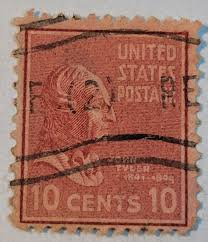 |
| eBay | USA - 1938 - Presidential Issue - John Tyler - 10C - #17 | eBay | 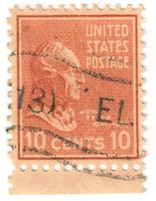 |
| eBay | Vintage Rare 1938 Red John Adams 2 Cent US Postage Stamp - | eBay | 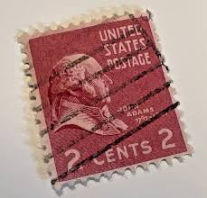 |
| eBay | 2019 THE BAR JEFFERSON / TYLER STAMPS / VINTAGE VIRGINIA POSTCARD CLIP #1/1 | eBay | 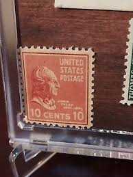 |
| eBay | United States Postage Stamp ~ John Tyler ~ 10₵ Orange ~ Posted ~ 1938 ~ E31 | eBay | 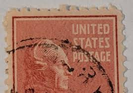 |
| eBay | US Stamp John Tyler 10c Used | eBay | 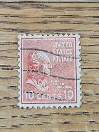 |
| eBay | Orange Brown Postage Stamp For Crafting 50 Copies 1938 John Tyler Scott 815 | eBay | 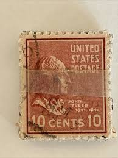 |
| eBay | STAMPS US SCOTT 815 "Tyler"10 CENT 1938 USED | eBay |  |
| eBay | 10c John Tyler-Used Single-Scott #815-1938 Presidential-Light Cancel | eBay | 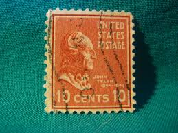 |
| eBay | United States Postage Stamp ~ John Tyler ~ 10₵ Orange ~ Posted ~ 1938 ~ E28 | eBay | 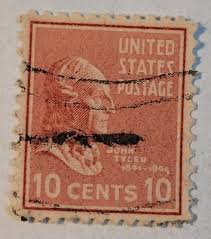 |
| eBay | US Stamp #815 John Tyler 10c - PSE Cert - Superb 98 - Mint DOG - SMQ $65.00 | eBay | 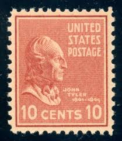 |
| eBay | United States Postage Stamp ~ John Tyler ~ 10₵ Orange ~ Posted ~ c.1938 - 33 | eBay | 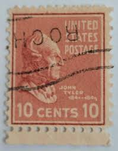 |
| eBay | USA - 1938 - Presidential Issue - John Tyler - 10¢ - #3450 | eBay | 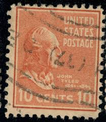 |
| eBay | U.S. STAMP #815 — 10c PREXIE -- XF -- MINT — GRADED 90 | eBay | 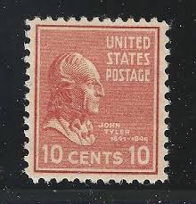 |
| eBay | United States Postage Stamp ~ John Tyler ~ 10₵ Orange ~ Posted ~ 1938 ~ E46 | eBay | 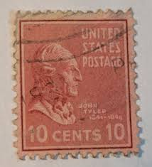 |
| eBay | STAMPS US SCOTT 815 "Tyler"10 CENT 1938 MNH | eBay | 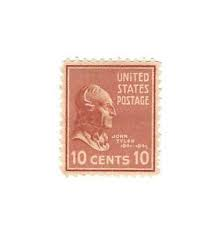 |
| eBay | US 10 Cent John Tyler Postage Stamp 1938, Scott #815 A5 Used (1) | eBay | 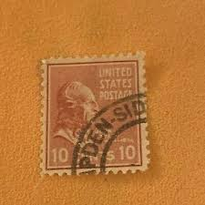 |
| eBay | USA # 847 VF-MNH 10cts JOHN TYLER COIL CAT VALUE $40 | eBay | 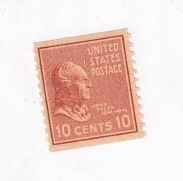 |
| eBay | United States Postage Stamp ~ John Tyler ~ 10₵ Orange ~ Posted ~ 1938 ~ E25 | eBay | 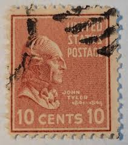 |
| eBay | US Stamps Scott 815 10c pair of the 1938 Presidential Issue M/NH Very fresh | eBay | 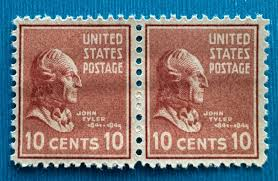 |
| eBay | 803 1/2 CENT FRANKLIN USED d | eBay | 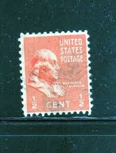 |
| eBay | U.S. Postage ~ John Quincy Adams ~ 2₵ Red ~ Posted/Used ~ c.1938 ~ Z17 | eBay | 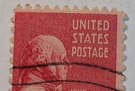 |
| eBay | United States, Scott 803, Benjamin Franklin, 1938, used | eBay | 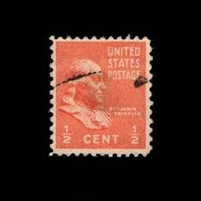 |
| eBay | 1938-39 / Presidental Issue / Wm. McKinley /Scott 829 / Used | eBay | |
| eBay | U.S. Postage ~ John Quincy Adams ~ 2₵ Red ~ Posted/Cancelled ~ c.1938 ~ Z24 | eBay | |
| eBay | U.S. Postage ~ John Quincy Adams ~ 2₵ Red ~ Posted/Used ~ c.1938 ~ Z10 | eBay |